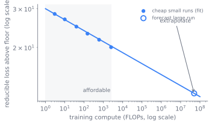
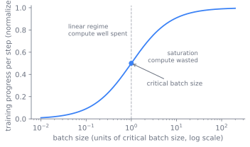

扩展律与算力分配
预训练是算力开销的主体：取定一个固定架构和固定数据配比，通过最小化下一词元损失，把 FLOPs 转化成一个基座模型。本章管的就是这笔开销的配方：训练目标、优化器、调度、批大小，尤其是那条在为训练付费之前就决定「训练多大模型、用多少词元」的扩展律。本章要讲清楚的，正是一个前沿模型为何是它那样的规模、为何用那么多词元训练，以及这个答案为什么在 2020 年到今天之间变了。
无法收回的赌注
一次预训练会占用集群数周，花掉一笔退不回来的预算。开始之前，你必须把参数量、词元预算、学习率调度和批大小都定下来，而且只能从小规模实验里去定，因为在全规模上逐一试错你负担不起。整章其实都在这个约束下问同一个问题：怎么花掉一笔固定的算力预算，让最终损失尽可能低，又怎么在投入之前就把答案预估出来。
这个问题之所以能回答，是因为这笔开销有一个可预测的形状。让它既成为可能、又可被度量的，是自回归训练目标。下一词元预测是对一条词元流的极大似然，在移位序列上配合因果掩码做交叉熵，于是每个位置都是一个训练样本，语料本身就是它的监督信号。它产出的损失，以每词元的 nats 或 bits 计，正是扩展律所预测的那个量；困惑度只是它的指数。损失这个单一标量，正是你用这次训练买下的东西，也是本章余下部分要学会的：先把它预报出来，再把每一美元换来的损失压到最低。
一条可外推的律
主导其余一切的决策是规模选定，而它之所以可解，是因为损失是平滑的。在一梯小规模训练上拟合出的扩展律，会把大规模训练的损失预测成参数、数据与算力上的一条幂律 (Kaplan et al. 2020)：
其中 是参数量、 是训练词元数。你在负担得起的训练上把常数拟合出来，再为打算花的预算读出计算最优的 与 。这条律能外推，这就是它的全部价值：它让寥寥几次廉价训练，替你预判一次只会做一次的训练。因为损失是算力上的一条幂律，那几次廉价训练会落在对数-对数坐标里的一条直线上，而这条直线能预测远在右侧那次昂贵训练的损失，正如 图 3.1 所勾画的。

同样的逻辑也延伸到损失公式没有点名的那些超参数。最大更新参数化（muP）让它们也能迁移：对宽度做参数化，使最优学习率与初始化在不同模型规模上保持稳定，先在一个小型代理上调好，再带到全规模，省去全额成本的扫描 (Yang et al. 2022)。这样一来，规模选定和超参数都成了你在小规模训练上决定、又在大规模训练上信任的东西。
先 Kaplan，后 Chinchilla
规模选定法则本身有一段历史，而搞错它是本章最昂贵的错误。Kaplan 等（2020）确立了损失服从平滑幂律，并据其拟合，建议把较大预算的大部分花在参数上 (Kaplan et al. 2020)。Hoffmann 等（2022），即 Chinchilla 论文，纠正了这一点：参数与词元应当一同扩展，在计算最优点约为每参数二十个训练词元，而 Kaplan 时代的配方一直在数据上系统性地训练不足 (Hoffmann et al. 2022)。一个 Chinchilla 最优的模型，比上一代所预期的更小，喂的数据更多。
同一笔由 固定的算力预算，在每种配方下分配出来的样子很不一样。图 3.2 对比了同一笔预算的三种分配：Kaplan 把它大多花在参数上，Chinchilla 在约每参数二十个词元处让参数与词元相互平衡，而推理感知的过度训练则刻意缩小模型、把其余算力倾注进词元，让每个被服务的词元更便宜。
配方并没有止步于 Chinchilla。当唯一词元用尽时，接棒的是数据受限的扩展：重复数据的价值会递减，超过几轮之后，加参数胜过加重复 (Muennighoff et al. 2023)。配方的前沿仍在移动。二阶与带预条件的优化器，Shampoo 和更新的 Muon，声称通过用曲率或正交化来调节更新，换取更好的每 FLOP 损失 (Jordan et al. 2024; Liu et al. 2025)。这些是活跃的可选项，还算不上已成定论的默认。
自己动手试一试
这条律足够具体，可以直接运行。下面的代码沿一笔固定的算力预算，在参数与词元的权衡上行走，找出损失触底之处。改一改指数再运行（点 Run，或按 Ctrl/Cmd+Enter），看计算最优的分配点怎么移动。
import numpy as np, matplotlib.pyplot as plt
# 玩具扩展律 L(N, D) = E + A/N^a + B/D^b。改一改指数。
E, A, B, a, b = 1.7, 400.0, 410.0, 0.34, 0.28
loss = lambda N, D: E + A / N**a + B / D**b
C = 1e19 # 固定算力预算，约等于 6 * N * D
N = np.logspace(8, 11, 300) # 候选参数量
D = C / (6 * N) # 该预算下允许的词元数
plt.figure(figsize=(5, 3))
plt.plot(N, loss(N, D))
plt.xscale("log"); plt.xlabel("parameters N"); plt.ylabel("loss")
plt.tight_layout(); plt.show()
best = N[np.argmin(loss(N, D))]
print(f"compute-optimal: N ~ {best:.2e} params, D ~ {C/(6*best):.2e} tokens")
配方的其余部分
扩展律定下了 与 ，却没定下优化器怎么走到那个损失，而这些选择是一组平衡，每个都有一个拐点。
第一个是优化器。AdamW 是默认，带解耦的权重衰减和两个矩估计，后者的状态是占主导的内存项，这也是 第 8 章 要将其分片的原因 (Loshchilov and Hutter 2019)。驱动它的学习率调度分三段：矩估计尚冷时的线性预热、一个稳定的高位阶段，再加一段衰减。余弦衰减到一个小下限，是被充分理解的默认选择，但它会在训练一开始就把词元预算锁死。warmup-stable-decay 在一个平台期保持恒定学习率，只在你选择停止时才衰减，于是一个平台期检查点能派生出许多次衰减，扩展实验也变得可组合 (Hu et al. 2024)。它用一点小的损失代价，换来继续训练、分叉衰减、跑干净扩展阶梯的能力。单次已知预算的训练就选余弦，预算不确定时选平台期调度。
第二个平衡是批大小。更大的批换来数据并行与更短的实际耗时，但越过临界批大小之后，你会白烧算力却换不来损失下降；批太小则让加速器空闲，还要为每个有用词元付通信开销 (McCandlish et al. 2018)。图 3.3 勾画了这个拐点：批还小的时候，每步的进展几乎线性上升，一旦越过临界大小便趋于平缓。临界批大小在训练过程中会增长，所以最优批是一条调度，而非一个常数。

而 muP 把这个回路又接回了规模选定。在一个小型代理上调好学习率与初始化、再以全宽度迁移，正是这一手让最大那次训练不至于白白损失精度，而你本来根本看不见这份损失从何而来 (Yang et al. 2022)。
让训练存活
本章大部分是一份计划。还有一小部分是让数周训练存活的运维工具包，因为训练要是第三周就死了，再好的计划也一文不值。稳定性技巧有这么几样：z-loss，对对数配分函数施加的辅助惩罚，阻止输出 logits 漂移 (Chowdhery et al. 2022)；QK-norm，在点积前对查询与键做归一化，给注意力 logit 的增长封顶；深度缩放的初始化；以及作为生硬安全网的全局范数梯度裁剪。损失尖峰恢复是一套流程，而不是一个超参数：先从梯度范数与损失遥测中检测到尖峰，再从近期检查点跳过并续训、降低学习率，并重排触发它的那些数据批 (DeepSeek-AI 2024)。图 3.4 勾画了这个回路。
flowchart TD
run["训练推进<br>记录梯度范数与损失"] --> watch{"梯度范数或损失<br>出现尖峰？"}
watch -->|否| run
watch -->|是| rollback["回滚到近期的<br>良好检查点"]
rollback --> lower["降低学习率"]
lower --> reorder["跳过并重排<br>触发它的数据批"]
reorder --> resume["续训"]
resume --> run几种失效模式值得逐一点名，因为它们各在不同时刻发作。发散到 NaN 会在早期把损失送向无穷，通常源于学习率过高、预热过短，或来自 第 8 章 的某个精度交互，用预热与裁剪预防最为廉价。损失尖峰出现在训练中途，若没有恢复方案，会白白浪费数日算力。规模与词元选错是其中最昂贵的，因为它就是整次训练；而全宽度下未调好的学习率，会让你白白损失精度，没有 muP 给出基线，你永远看不见这份损失。
延伸阅读
- Kaplan et al., “Scaling Laws for Neural Language Models,” 2020. arXiv:2001.08361
- Hoffmann et al., “Training Compute-Optimal Large Language Models” (Chinchilla), 2022. arXiv:2203.15556
- Yang et al., “Tensor Programs V: Tuning Large Neural Networks via Zero-Shot Hyperparameter Transfer” (muP), 2022. arXiv:2203.03466
- Loshchilov & Hutter, “Decoupled Weight Decay Regularization” (AdamW), 2019. arXiv:1711.05101
- McCandlish et al., “An Empirical Model of Large-Batch Training” (critical batch size), 2018. arXiv:1812.06162
- Muennighoff et al., “Scaling Data-Constrained Language Models,” 2023. arXiv:2305.16264
- Hu et al., “MiniCPM: Unveiling the Potential of Small Language Models with Scalable Training Strategies” (warmup-stable-decay 调度), 2024. arXiv:2404.06395
- Chowdhery et al., “PaLM: Scaling Language Modeling with Pathways” (z-loss, 大规模稳定性), 2022. arXiv:2204.02311
- Jordan et al., “Muon: An Optimizer for Hidden Layers in Neural Networks,” 2024. kellerjordan.github.io
- Liu et al., “Muon is Scalable for LLM Training,” 2025. arXiv:2502.16982
- DeepSeek-AI, “DeepSeek-V3 Technical Report” (万亿词元稳定性与损失尖峰实践), 2024. arXiv:2412.19437